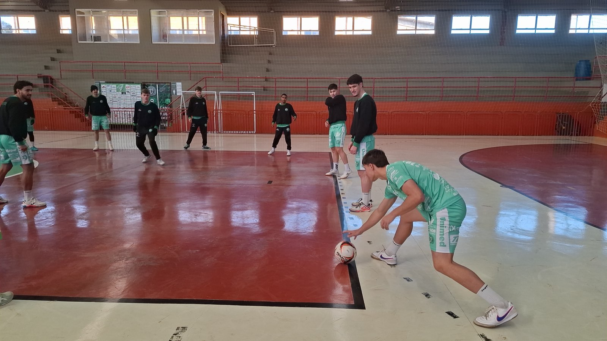
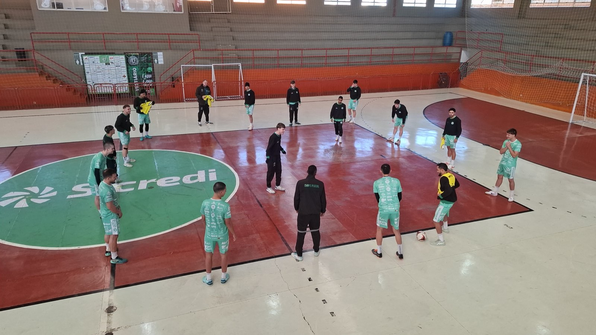
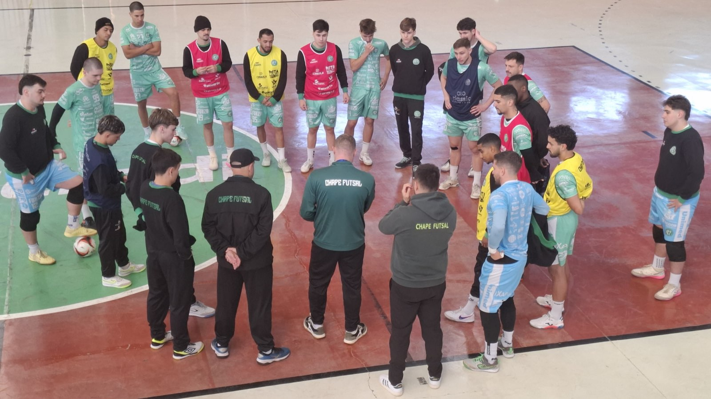

A Prefeitura de Chapecó/Chapecoense/Unochapecó entra em ação neste sábado (27/6), às 17h, para um jogo que pode valer a classificação antecipada às quartas de final da Copa Santa Catarina de Futsal. O Verdão das Quadras vai enfrentar a Apaff/Floripa, no Ginásio Plínio Arlindo De Nes (SER Aurora), em Chapecó, em duelo atrasado da segunda rodada.

A equipe do técnico Leo Schroeder lidera o grupo A com 9 pontos em 4 partidas. Se vencer, o time do Oeste catarinense irá a 12 pontos e já garante uma das quatro vagas para o mata-mata. O clube de Florianópolis tem três pontos em dois confrontos. Após este compromisso, a agremiação verde-branca terá apenas mais um pela primeira fase: diante do Catanduvas, fora de casa.
"Sabemos da importância da partida. Uma vitória nos classifica na competição. A nossa equipe está em uma crescente muito boa. Temos que manter isso e fazer valer o mando de quadra", disse o fixo João Camilo. Já são três triunfos seguidos: um pela Série Ouro estadual, onde também lidera, e dois pela Copa SC.

Ingresso solidário
Além de incentivar a Chape Futsal, a torcida pode ajudar as pessoas que mais necessitam durante o inverno, por meio do Ingresso solidário. Com R$ 10 e uma peça de agasalho ou cobertor, que deve ser entregue na portaria do ginásio, o torcedor tem acesso às arquibancadas. O sócio entra apresentando a carteirinha, ou seja, não precisa adquirir o bilhete, mas está convidado a participar da campanha. As doações serão repassadas à Fundação Aury Luiz Bodanese.
O ingresso normal sai por R$ 20 - caso não leve um agasalho - e a meia-entrada para pessoas com direito garantido por lei, R$ 10. Crianças até 12 anos não pagam, desde que acompanhadas por um responsável e portando documento de identificação.

Pontos de venda
Os tickets podem ser comprados, antecipadamente, na Loja Oficial da Chape Futsal (na rua Paulo Marques, entre as avenidas Fernando Machado e Porto Alegre), na Loja iXap Sports (na avenida Getúlio Vargas, entre as ruas Paulo Marques e Vitório Cella) e pelo site ingressojogo.com.br. Também haverá venda na hora.
Crédito das fotos: Chape Futsal